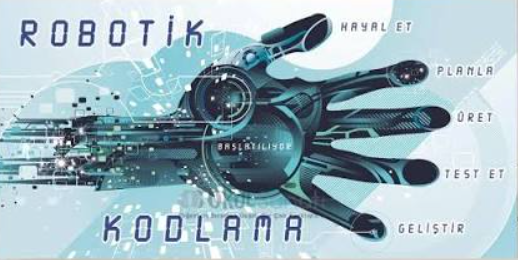

Otonom Robotik ve Yapay Zekâ Çalıştayı 2026

Etkinlik Künyesi
- Tarih
- Yer
- Mühendislik Fakültesi A-2 Hall
- Kategori
- Çalıştay / Atölye
- Kontenjan
- 50
Ayrıntılı Açıklama
Bu etkinlikte otonom mobil robotlar, sensör füzyonu, ROS (Robot Operating System) tabanlı simülasyonlar ve gömülü sistemlerde yapay zekâ uygulamaları üzerine teorik ve uygulamalı sunumlar gerçekleştirilecektir.